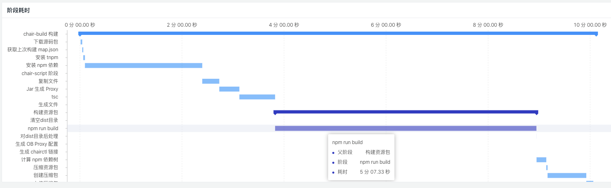
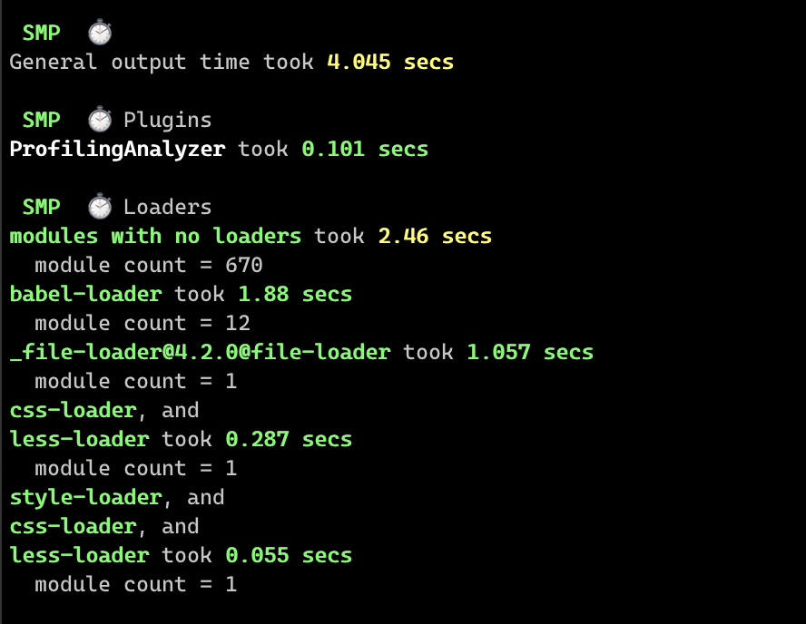
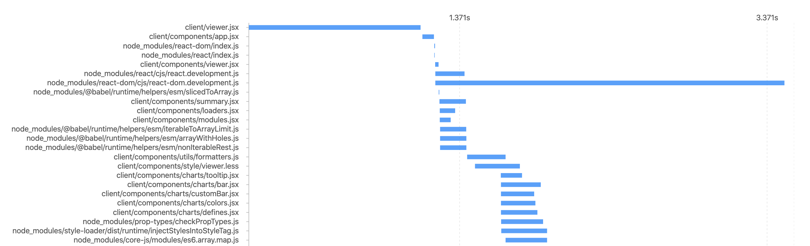
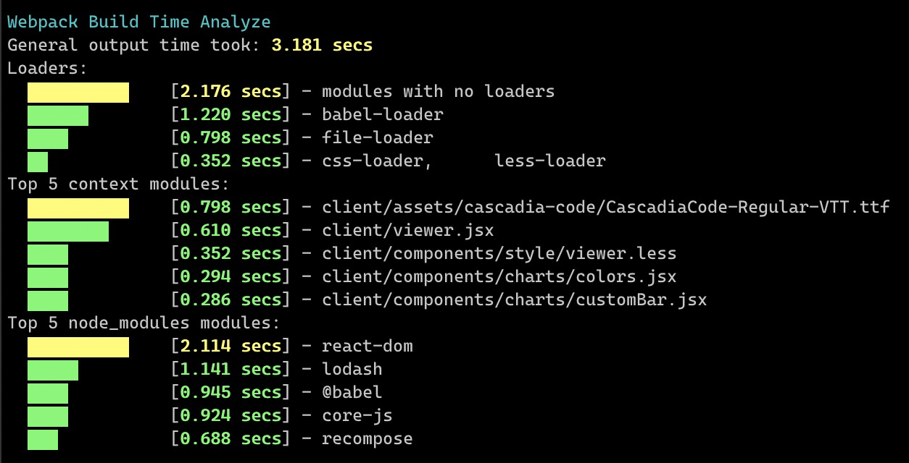
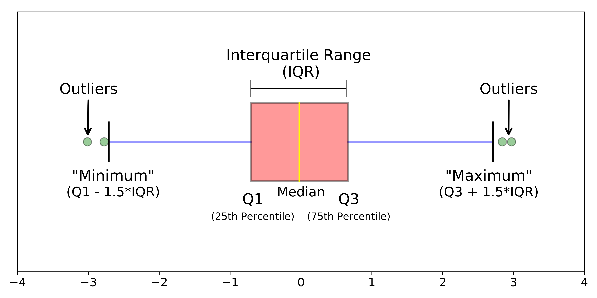
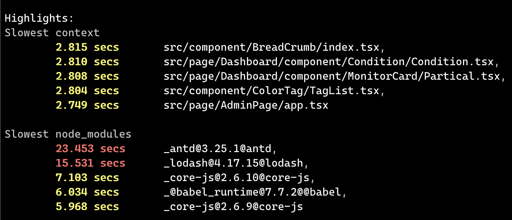
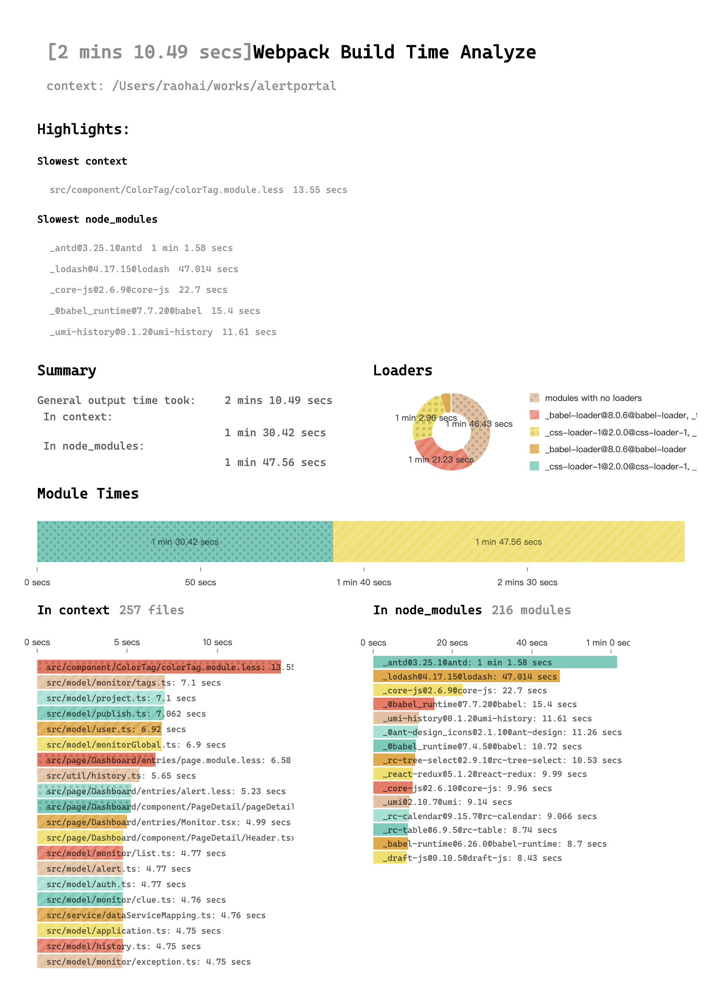
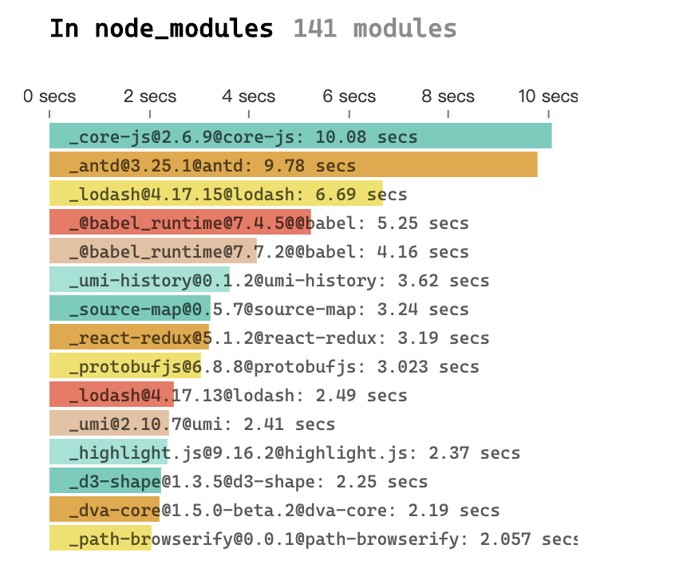

前言
现阶段，前端构建时间已经成为 Basement 平台和用户的共同困扰（之一）：在平台的数据看板上，每周构建最慢的应用通常都是 10 分钟级。而用户也在不断的通过不同渠道表达对构建速度的不满。
在 Basement 4.0 新开放的功能 「构建报告」 中，已经透出了整个 pipeline 中各阶段的耗时甘特图，但遗憾的是，花费时间最长的前端构建部分，仍然近乎黑盒。

通常情况下，如果关心构建时间，我们可以使用 Speed Measure Plugin (SMP) 来收集构建过程中的时间消耗。主要包括总体耗时、各插件与各 loader 的耗时。SMP 插件可以让我们对 webpack 的构建消耗有一点了解，但它只透出了时长消耗的总览，而没有各模块的耗时细节。

为了获取更多 webpack构建的细节，包括哪个文件、模块在构建中消耗了最多的时间，冗长到不能忍的构建时长到底花费在了哪个（些）模块上，给构建部署优化以明确的指引。这也就是题图中的那句话：
If you can't measure it, you can improve it.
或者换成更简短的中文
无度量，不优化。
开端：Compiler And Compilation Hooks
Webpack 提供了 Compiler 和 Compilation 的 hooks。
其中，Compiler 会在通过 Node API 或 CLI 传递编译选项到 webpack 时创建新的 Compilation 实例。Compilation 则在编译阶段负责模块的加载（load）、封装（seal）、优化（optimize）、分块（chunk）等操作。Compiler 和 Compilation 都拓展了 Tapable 类，可以使用 tap、tapAsync、tapPromise 等 API 为它们的一些生命周期挂上钩子。
那么只要在分别记录 compiler 的开始时间（ compiler.hooks.compile ）与结束时间（ compiler.hooks.done ），计算它们之间的时间差即可得出 webpack 的总体构建时长。
而对于 Compilation 而言，在开始构建一个模块之前，会触发 compilation.hooks.buildModule ，在成功构建完成后，会触发 compilation.hooks.successModule 。记录下每次 buildModule 触发时对应的模块，再在 successModule 时标记为完成。就可以采集到每个模块构建的起止时间与耗时。
到这个阶段，我们可以拿到一份各模块及它的 loaders 的耗时，像这样
{
"client/components/viewer.jsx": {
"loaders": [
"babel-loader"
],
"start": 1574149981841,
"end": 1574149981863
},
"node_modules/react/cjs/react.development.js": {
"loaders": [
"modules with no loaders"
],
"start": 1574149981842,
"end": 1574149982032
},
"node_modules/@babel/runtime/helpers/esm/iterableToArrayLimit.js": {
"loaders": [
"modules with no loaders"
],
"start": 1574149981873,
"end": 1574149982043
},
"node_modules/@babel/runtime/helpers/esm/arrayWithHoles.js": {
"loaders": [
"modules with no loaders"
],
"start": 1574149981873,
"end": 1574149982044
},
...
}继续：目录与 loaders 的聚合
上一份数据中，所有的记录的粒度都是到文件。但对一个开发来说，他对自己的业务代码会关心到文件，但对项目的依赖往往只需要关心到依赖就可以了。所以我们需要区分处理：对于业务代码，仍然提供细到文件的构建时长数据，而对于依赖，只需要提供到依赖粒度的数据就可以了。
值得注意的是，Webpack 并不是串行处理各个模块的，也不是完全并行。在上面的模块详情数据中， viewer.jsx 最先开始构建，但未等构建完毕，就同时开始了 react.development.js 的处理。仍然未等构建完成， @babel/runtime 中的 iterableToArrayLimit 与 arrayWithHoles 两个文件已经同时开始了。
可以把上面的数据按照文件、start 和 end 画出甘特图，大概会是这样的情况：

所以要聚合统计某个依赖（即目录）下的耗时，需要先把属于该目录下的所有文件的起止时间取出来，做分段累加。才能得到准确的耗时情况。
同理，要准确统计在构建中每个 loader 的总体耗时，也需要把属于使用某个 loader 的所有文件的开始结束时间都取出来做分段累加。

到这个阶段，已经初步满足了需求：用户代码按文件给出构建时长，而依赖和 loader 分别按依赖名和 loaders 组聚合统计构建时长。
佳境：离群值检测
为了给到用户明确的建议，我们对每一个模块的构建耗时进行了离群值 (outlier) 检测。这里我们用了 IQR 算法简单实现：当一个值超出两倍 IQR 时[1]，则会被标记成离群值。插件会把被标记成离群值的模块推送建议。

这个简单的检测效果其实还不错。

可视：更清晰的指引
回到需求本身。我们希望这个插件能做什么。
首先：我们希望从时间维度分析前端构建过程中的时间消耗发生在哪个阶段、哪些文件与哪些依赖。
其次：我们希望通过耗时分析给到用户结论与帮助。包括减少用户代码的构建耗时及依赖的构建耗时。
基于以上需求，左边手绘了一下 PRD，右边是最后实现的报告页面。为了更直接的把建议给到用户，所以再一次把建议内容提前。
此处原文包含 image 内容。 | 此处原文包含 image 内容。 |
实战：指引优化 @alipay/alertportal
@alipay/alertportal 是蚂蚁前端监控的前端项目。构建部署时间平均在 1 ~ 2 分钟。我们尝试使用这个插件去减少它的构建时长。这个项目是一个 bigfish 项目，所以需要在 config.js 里使用 chainWebpack 去加载这个插件：
export default {
// ...原有配置
chainWebpack(config) {
config.plugin('ProfilingAnalyzer')
.use(ProfilingAnalyzer, [])
.end()
}
}npm run build 之后看下报告。

业务代码的头部耗时居然都在 10 秒级别。先放一下。
- less 文件加载耗时特别长。
- 依赖中，
antd,lodash,core-js等耗时特别长。
分别看一下
- 把 antd external 掉。因为要 external 掉 antd，所以 React 也要 external 掉。非常立竿见影，构建时间减少到 49 秒，node_modules 只剩下 141 个模块，构建时间也大幅度减少。

- 对于 less 文件，例如 colorTag.module.less，看一下其实是在 less 里 import 了
antd/lib/dropdown/style/index.less。其实除了引入样式并无它用。直接将 less 里的 import 提到 js 里。再减 10s：
REFERENCES
[1] Understanding Boxplots https://towardsdatascience.com/understanding-boxplots-5e2df7bcbd51